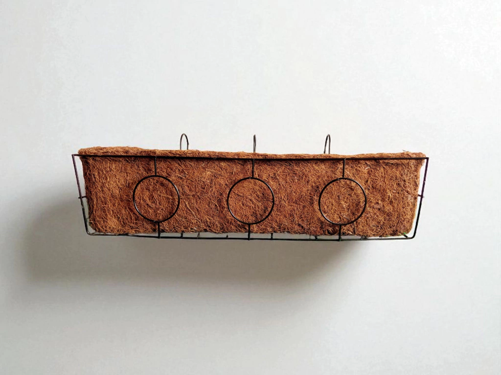

Maceta Circular Colgante Chica C/Arnés.
Con un diámetro de 17 cm y una altura de 8.5 cm, esta maceta colgante es perfecta para darle un toque moderno y sofisticado a cualquier ambiente.
$160.00

Maceta Circular Colgante Mediana C/Arnés.
Esta maceta de fibra de coco mide 24 cm de diámetro, 12 cm de alto y cuenta con una base de 11 cm, ideal para tus plantas favoritas.
$202.00

Maceta Circular Colgante Grande C/Arnés.
Fabricada en fibra de coco, mide 33 cm de diámetro, 16 cm de alto y base de 13 cm, perfecta para tus plantas favoritas.
$265.00

Maceta Jardinera De Balcón o Pared C/Arnés.
La Maceta Jardinera De Balcón o Pared C/Arnés es perfecta para aprovechar tus espacios exteriores o interiores. Con medidas de 74 cm de largo, 23.5 cm de alto y 13 cm de ancho, la fibra de coco ofrece un diseño elegante y funcional. Su pintura horneada brillante en color negro garantiza resistencia y durabilidad. Además, puedes usarla como maceta de pared simplemente quitando los ganchos. Ideal para quienes buscan calidad y estilo en sus jardines urbanos.
$612.00

Maceta Circular Colgante Jumbo C/Arnés.
La Maceta Circular Colgante Jumbo con Arnés es perfecta para decorar y darle un toque natural a tus espacios. Fabricada en fibra de coco, cuenta con medidas de 33 cm de diámetro, 16 cm de alto y 13 cm de diámetro en la base, ideal para diversas plantas.
$369.00

Maceta Media Luna De Pared C/Arnés.
La Maceta Media Luna De Pared C/Arnés es ideal para decorar y mantener tus plantas con estilo y seguridad. Con medidas de 16.5 cm de alto, 31 cm de largo y 16 cm de ancho, está fabricada en fibra de coco, ofreciendo resistencia y un toque natural.
$225.00